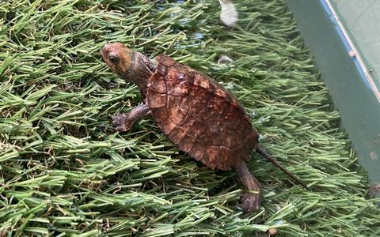
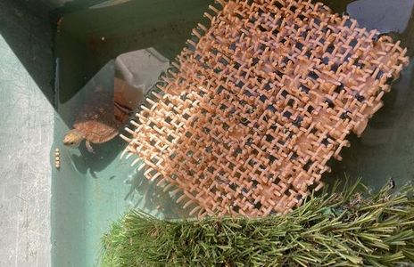

成長記録
生後四か月ぐらいのベビーを我が家に迎えてからの成長を記録した。

飼育開始初日
- 甲長46㎜。
-  首を伸ばせば水面に顔を出せる程度（水深52㎜）の水を張って泳ぐ練習を始めさせたところ、 最初から泳ぎまわって陸に登ったり水底を歩いたり、環境にも慣れた様子で餌を食べ始めたので安心した。 子亀は2～3cm程度の浅い水深が良いと言われているので様子を見ながらになるが、今後徐々に水深を深くしていくつもり。 自然界では水深2～3cmの環境で生きていないと思うので、本能を信じ、できるだけ身体能力の高い丈夫な子に育てたい。